SUPERMILLS — fast, modular manufacturing for America’s material future
America is building again — and it is short the materials to do it
Data centers, reshored factories, housing, the grid. The build-out is here, and the key structural materials it runs on are increasingly not made here:
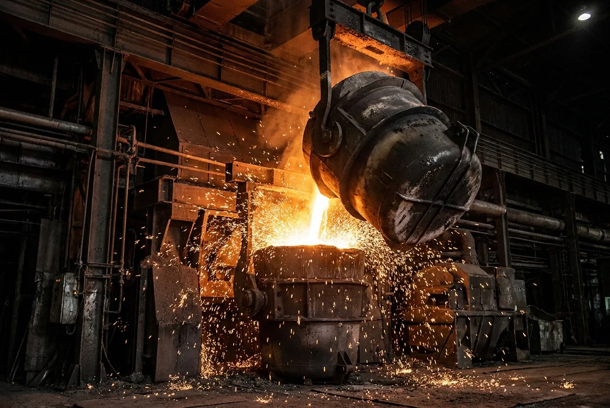
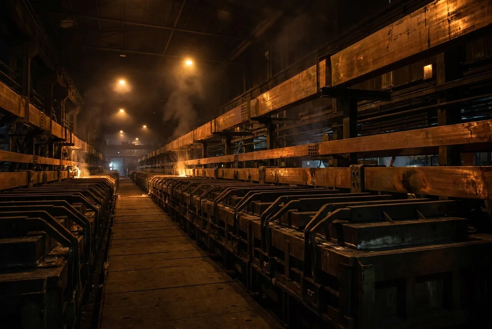
America is building again — and it is short the materials to do it
Data centers, reshored factories, housing, the grid. The build-out is here, and the key structural materials it runs on are increasingly not made here.
America is building again — and it is short the materials to do it
Data centers, reshored factories, housing, the grid. The build-out is here, and the key structural materials it runs on are increasingly not made here.
More of the old mills won’t close the gap — not in time
Billions per plant
- Aluminum: the Inola smelter, the first new American smelter in over 40 years, is a $4B JVCentury Aluminum / EGA joint venture in Inola, OK. A $500M DOE award moved it forward; first metal expected ~2030, and its power deal was still open in 2026., and needed a $500M federal grant to advance
- Steel: Nucor’s newest “minimill”, at Apple Grove, was $4B, and took 4 years from ground-breaking to first shipmentAnnounced September 2021 at $2.7B; the board-approved cost grew to ~$4.0B. Six years announce-to-ship, four of them from ground-breaking.
10+ year development timelines
- Massive power needs — >1 GW continuousRoughly a city’s worth of continuous load, secured before first metal. Inola’s power deal was still open in 2026, competing with data-center demand for the same grid capacity. per smelter, competing with data centers
- Complex logistics — Inola runs on bauxite mined in and shipped from AfricaEGA mines the bauxite in Guinea, refines it to alumina, and barges it to Oklahoma via the port of New Orleans. EGA — UAE state-owned — holds 60% of the JV.
- Challenged by cyclicality of commodity industry — approvals for development often happen when the commodity is peaking, but long timelines make it hard to catch the opportunitiesThe downswings close plants: Century idled Hawesville in July 2022 over “soaring energy prices” — then North America’s largest high-purity primary producer. Ravenswood, WV closed 2015; Mt. Holly, SC halved 2015.
Community pushback
- Pollution and power — Inola is permitted for over one tonne/day of hydrogen fluorideThe air permit allows more than a tonne of hydrogen fluoride per day — the emissions figure at the center of local opposition to the smelter. and requires the power capacity of the second largest city in OklahomaTulsa. The smelter could draw ~11 TWh a year — enough electricity to power Boston or Nashville. Canary Media
- Broad community upset — Oklahoma’s AG has sued to block Inola; Muscogee Nation unanimously opposed; town halted approvalsInola’s five-member board of trustees voted unanimously for a 60-day moratorium on approvals (June 2026) after nearly six hours of public comment. The AG’s petition was filed in Rogers County District Court the same month, alongside a 3,400+ signature petition. Oklahoma Voice. Concerns around pollution on cropland and livestockRanchers fear the permitted hydrogen fluoride — >1 t/day — would settle on the bluestem prairie hay they grow and poison the cattle that eat it; long-term fluoride exposure damages animals’ teeth and bones. The Frontier, power requirements, and foreign ownership
Closing America’s materials gap needs a different kind of mill: small enough to site easily, fast enough to scale to the need, using raw materials that continuously grow everywhere.
Sources — Old Mills
- US DOE (2025) — $500M award to the Century Aluminum / EGA smelter in Inola, OK — the first American primary smelter since 1980.
- Canary Media (2026) — ~$4B JV; >1 GW continuous power requirement; still waiting on a power deal; bauxite imported via the port of New Orleans.
- S&P Global (2024) — US mines average ~29 years from discovery to production, second-longest in the world.
- Mining.com (2026) — smelters keep closing on power prices: Hawesville idled 2022 (“soaring energy prices”), Ravenswood closed 2015, Mt. Holly halved 2015.
- Oklahoma AG (2026) — petition to block the Inola smelter (Rogers County District Court, Jun 2026); 3,400+ signatures; unanimous Muscogee Nation resolution; permitted >1 t/day hydrogen fluoride.
- Oklahoma Voice (2026) — Inola’s board of trustees unanimously imposed a 60-day moratorium on smelter approvals after ~6 hours of public comment.
- The Frontier (2026) — ranchers’ fluoride concerns for prairie hay and cattle; power-use and 60% UAE-state-ownership objections.
SUPERMILLS turn low-value, domestically abundant feedstocks into superior building materials
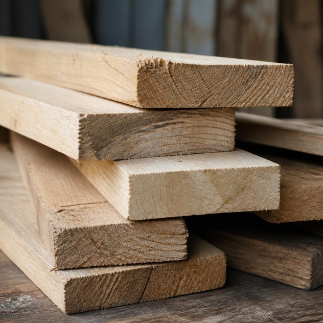
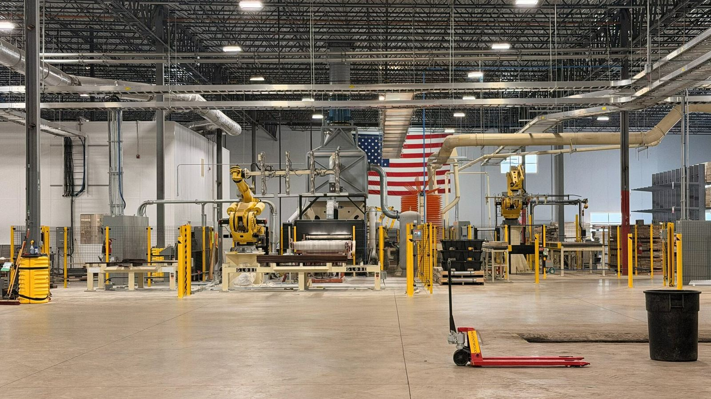
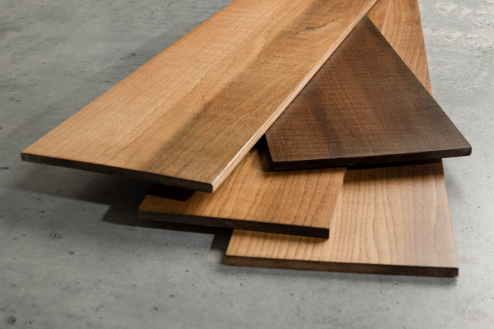
Each SUPERMILL is separately financeable and built from a repeatable template — project financing may cover the full cost of new mills; we have modelled only 75% debt. EBITDA depends on the blend of commodity structural vs premium products. SUPERMILLS can be readily and rapidly replicated worldwide.
Fast to build. Fast to build with.
Site development is what stalls big plants. A SUPERMILL barely registers.
Fast to permit and build
- <4 MW — standard industrial service, no interconnection queue
- No smelter-class emissions — wood residues fuel the process heat
- Community friendly — creates/protects jobs without massive power draws and pollution problems
Fed by what America already has in abundance
- 48 states have sufficient feedstock for a SUPERMILL
- Sawmills are closing down across the country
- In contrast, new mines are taking at least a decade to develop
SUPERWOOD enables faster construction
- Builds like timber — prefabricated to precision
- 6x lighter than steel — smaller cranes, crews, foundations, and easier transport
- 20–30% faster schedules than steel and concrete
Sources — Fast × Fast
- ULI Urban Land & case studies — mass-timber schedule savings run ~20–30% vs. concrete and steel across case-study reviews.
- S&P Global (2024) — a new US mine averages ~29 years from discovery to production.
- Site figures (<4 MW grid draw, self-fueled process heat): InventWood engineering basis.
Its product wins today — high performance, with a path to costs below steel
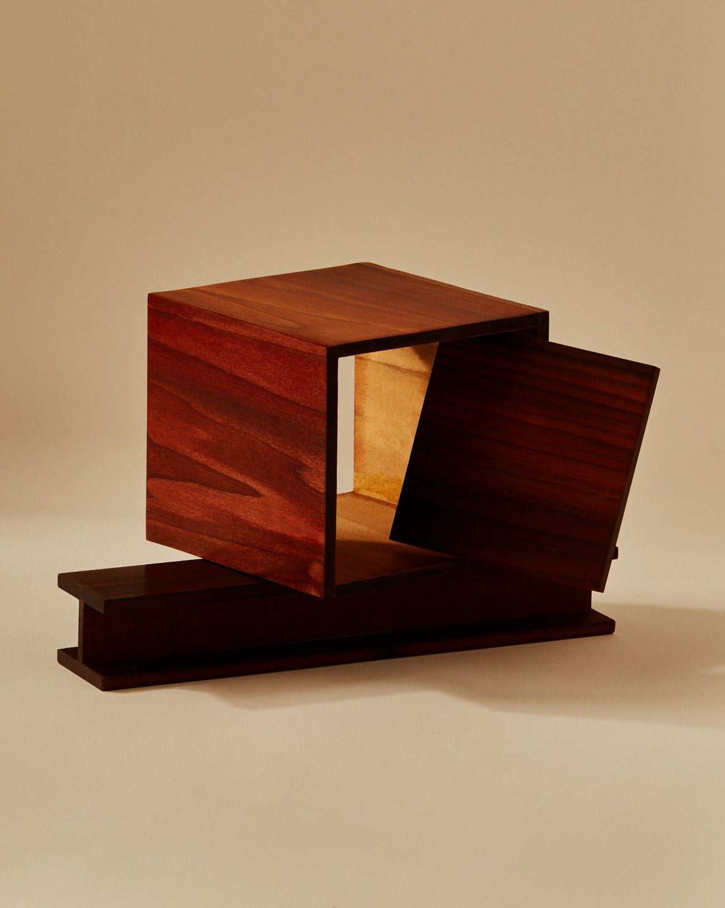
Strong and durable
Up to 10x the strength-to-weight ratio of steel. 3x harder than oak. Highly impact resistant.
Fire resistant
Forms dense natural char layer. ASTM E84 tested to Class A and aerospace standards.
Fights pests, rot & fungus
Protects against familiar threats such as termites, mold and corrosion.
Thermally insulating
100x better than steel; 400x better than aluminum.
Sound attenuating
Improved sound dampening versus steel, with improved acoustic performance.
RF transparent
Wireless signals pass through unhindered. Won't interfere with sensitive electronics.
Naturally beautiful
With the texture, colors, and natural warmth of wood.
Note: SUPERWOOD's technology is tunable for certain properties like strength, moisture and fire resistance, depending on the application. Not all products will necessarily meet every test standard concurrently.
With a cost roadmap driving below the cost of steel, and beyond
And every square foot of it is made in America, from American lumber.
CHIPMILL is the future SUPERMILL generation fed by low-cost wood chips and waste. SUPERMILL ONE was designed as a subscale pilot facility for SUPERMILL TWO. Like-for-like comparison. SUPERWOOD prices are per-market assumptions, not one product at three prices: $15.00 / sf is premium interior (mullions, blinds, luxury furniture structures), $5.50 / sf interior board, $3.00 / sf commodity structural, and ChipMill continuous at an assumed 60% gross margin, $2.19 / sf — converted at 7.2 mm average board thickness; SUPERMILL TWO economics assume selling into a blend of premium and structural markets, so projected revenue reflects a blended realized price above the structural-board assumption charted here. Costs are COGS per m³ from the structural TEM (Jan 2026) cost roadmap, built from identified engineering savings at each scale — not from Wright’s Law or an assumed learning rate. Steel and stainless are market prices converted at 7.85 and 8.0 t/m³ (August 2026).
SUPERMILL ONE — Frederick, Maryland. 90,000 sf.
Ramping to 1 million sf/year of capacity.
SUPERMILL ONE is already running — and it is oversubscribed
The machine works, the process is proven, and the premium product sells today at premium prices, while the cost roadmap does its work.
Customer demand has proved exceptional
Inbound Inquiries
Including individual homeowners, builders, national distributors, global manufacturers, top architecture firms, leading engineering firms, data center hyperscalers and other commercial enterprises across industries and geographies.
Paid Online Deposits
All inbound. ~50% from homeowners, representing $14M+ of demand, and ~50% from commercial enterprises, representing $125M+. Note that most commercial accounts we are in discussions with are not making an advance deposit.
SUPERMILL ONE Pipeline
Spanning a variety of customer segments including builders, contractors, distributors, manufacturers, commercial and residential pre-orders, and brand-building signature projects.
SUPERMILL TWO Pipeline
Representing larger opportunities not serviceable from SuperMill One, spanning similar customer segments and an even wider variety of applications including aerospace, military, marine and more.
With engagement from a broad set of global customers
SuperMill One
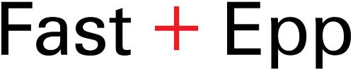
SuperMill Two
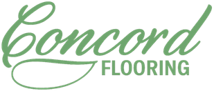
Future SuperMills
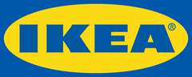
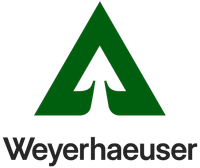
With so many opportunities, focusing execution on a small number of scalable opportunities — as shown in the bottom left section — is critical.
Capital efficient financing model gets us to $900M of free cash flow with less than $200M in corporate equity
Highly efficient asset-level financing plan
- SuperMills can be financed with ~75% debt, with the remainder from project equity (10–15%) and corporate equity (10–15%)
- Capex for additional SuperMills expected to range from $300M for SuperMill Two to $550M+ for later SuperMills
- 175–200% ROE at the SuperMill level
- Meaningful additional upside from grant and other non-dilutive opportunities (not included in any projections)
Detailed financial model available on request
With just four SuperMills, we can achieve:
Enabling a fleet of SUPERMILLS, across America and the globe
Global demand potential: >7,000 SUPERMILL TWO equivalents
SUPERMILL ONE
Designed as a subscale pilot facility for SUPERMILL TWO: commercialize process, prove techno-economics, seed demand for future SUPERMILLS.
SUPERMILL TWO
Same batch process as SUPERMILL ONE — at increased scale.
NATIONAL FLEET OF SUPERMILLS
Modular construction and manufacturing make additional SUPERMILLS easy to site and fast to build.
INTERNATIONAL
Typically a JV with a local partner: InventWood earns a technology & setup fee, an operating fee, and a brand / marketing fee.
CHIPMILL FLEET
Further scale & profitability. Continuous manufacturing on low-cost wood chips & wood waste. International plants as JVs with local partners — technology & setup, operating, and brand / marketing fees.
Building the team to scale
- Technology entrepreneur and investor who began his career in Silicon Valley in artificial intelligence and human-interface design.
- Involved in five successful manufacturing scale-ups around the world.
- 20+ years in real estate development and operations, leading groundbreaking development and redevelopment projects in California and Canada.
- Built world-class teams and is a successful IP strategist across multiple firms.
- BS Cognitive Science and Physics, Dartmouth.
- 3× CEO. Co-founded and led the building-materials company named America's fastest-growing manufacturer by Inc. 5000.
- Over 25 years of leadership and entrepreneurship, including CEO of a biomaterials manufacturing company and a SaaS company he took to the NASDAQ.
- Manufacturing turnaround expert at American Industrial Partners.
- MS Manufacturing Management, MIT Sloan.
- Climate and infrastructure investor and operator, across both project finance and corporate equity.
- Co-founder and Managing Partner, Lattice Impact Capital.
- VP Global Sustainable Finance, Morgan Stanley.
- VP Capital Markets and Corporate Development, BrightFarms.
- Advisor to Mayor Michael Bloomberg, New York City.
- BA, Brown, magna cum laude. MA, Harvard.
- Has built more than $2 billion of projects across three decades.
- Career spent delivering capital projects in pulp, paper and tissue manufacturing — the closest industrial analogue to SUPERWOOD production.
- Led Solaris Paper’s relocation into an 800,000 sf facility in Moreno Valley, California, in full operation by early 2019.
- Project leadership at St. Croix Tissue and Woodland Pulp.
- Earlier, senior project manager at Turner, one of the largest construction firms in the US.
- PMP certified. University of Cincinnati.
- Key co-inventor on the core patents, both at the University of Maryland and since.
- Drives the innovations that lower cost and continually improve SUPERWOOD's performance and functionality.
- H-index of 96, ranked in the top 2% of scientists worldwide — and an award-winning artist.
- PhD in Materials Science & Engineering from the University of Maryland.
- Serial technology entrepreneur and investor.
- Co-founder and former CTO of Marketo, the marketing-automation SaaS unicorn, where he helped bring the company onto the NASDAQ.
- BS Computer Information Science, University of Oregon.
- Former President of Magnusson Klemencic Associates, America's most highly-awarded structural-engineering firm, and engineer of record for the headquarters of several tech giants, and tall buildings around the world.
- Authored 15+ publications on tall-building systems, structural innovation and embodied-carbon optimization.
- Co-founder of the Carbon Leadership Forum and Building Transparency, and part of the team that created the EC3 embodied-carbon tool.
- Advisor to the US Special Presidential Envoy on Climate.
- Environmentalist, entrepreneur and bestselling author of nine books, including Drawdown and Regeneration.
- Consults with governments around the world and advises many of the most prominent multinational corporations.
- Author of Drawdown, Carbon, Natural Capitalism and The Ecology of Commerce.
- Principal and Director of Sustainability & Performance at Eskew Dumez Ripple, AIA Firm of the Year in 2014.
- Award-winning architect and Americas representative for the UN's Architects' Union.
- Former CTO of Xerox.
- Sc.B. Physics, MIT; PhD Electrical Engineering & Computer Science, Princeton; M.Arch, UC Berkeley.
- Principal and partner at Gray Organschi Architecture, winner of multiple AIA awards, and Principal at JIG Design Build.
- Professor at the Yale School of Architecture and Director of the Yale Building Lab.
- Founded the Timber City Initiative and wrote the seminal paper "Buildings as a Global Carbon Sink." Recipient of the Arts and Letters Award in Architecture, 2012.
- A 30-year career at Weyerhaeuser culminating as VP of Capital Projects, where he led a $1.5B fleet overhaul.
- Ran technology development and scaling operations from R&D to mass-market sales, led manufacturing for TrusJoist (its fastest-growing product), and ran operations for the entire East Coast.
- Deep relationships throughout the wood-processing industry.
Backed by institutional capital and industrial operators
SELECT INSTITUTIONAL INVESTORS
John Rockwell
CEO of four companies, all with successful exits. Founder and Managing Director of Element Partners, an $800M venture capital and PE firm, and Managing Director of Advent's Silicon Valley office.
Bill McGlashan
Former co-founder, managing partner of TPG Growth and TPG Rise, leading investments into Uber and AirBnB, and board member of Fender, Creative Artists Agency, and Common Sense Media.
Jacqueline Koerner
Founder, Co-Chair of Ecotrust Canada. Vice-Chair, CIFAR. International development and microfinance consultant. Background in sustainable forestry and anthropology.
Scott Jacobs
Co-founder of McKinsey's Cleantech practice. Co-founder and former CEO of Generate Capital, one of the largest project-finance firms in the climate sector. MBA Harvard, Baker Scholar.
Colin Bosa
Co-founder of Axiom, one of the top general contractors in BC. CEO, Bosa Properties, one of the top high-rise developers in BC.
Roger Sant
Co-Founder, former CEO, and Chairman Emeritus of AES Corporation, growing it to one of the largest independent power producers in the world. Former Chair, World Wildlife Fund.
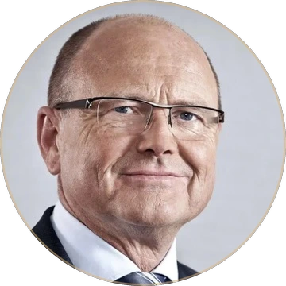
Jochen Stotmeister
Chairman of Sto Corporation, one of the largest premium cladding solutions companies in the world.
Nick Sansone
CEO of Sansone Group, the #5-ranked commercial real estate developer in the U.S. and one of the largest data center developers.
From university research to commercial production — and ready to scale
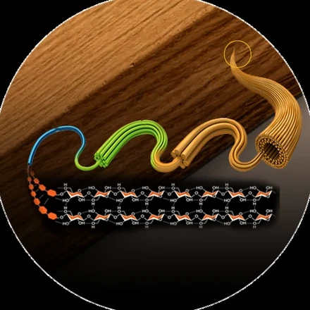
The breakthrough
Dr. Liangbing Hu invents SUPERWOOD at the University of Maryland.
IP & commercialization
Patent portfolio built. Developed low-cost manufacturing strategy. Explored market opportunities.
SuperMill One
First plant built in Frederick, MD. Lab to commercial scale; shipments began Dec '25.
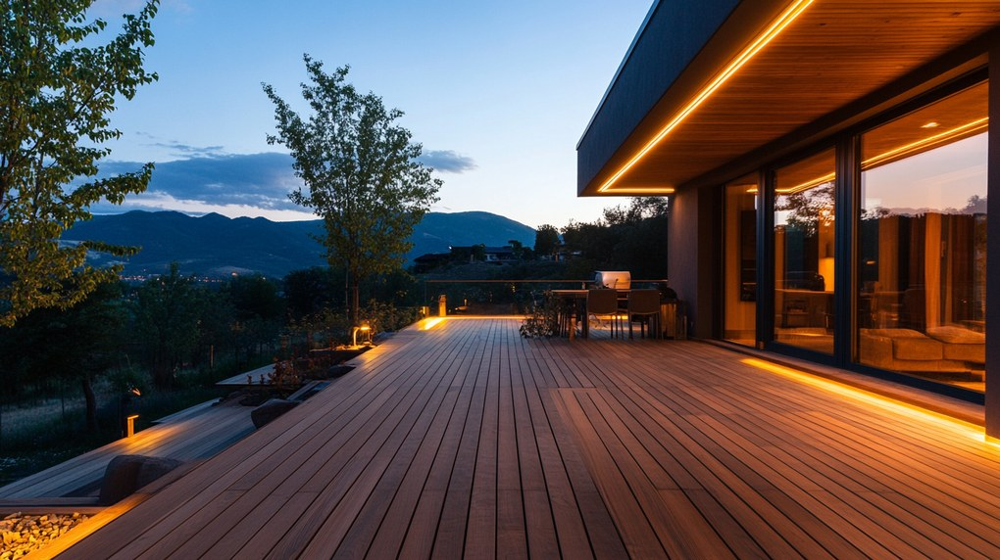
First customers
Deliver, delight, and prove SUPERWOOD across a range of applications.
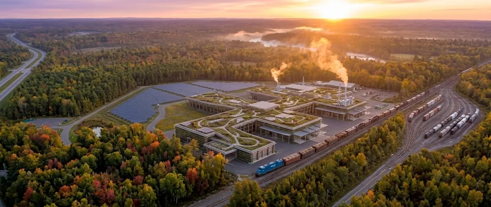
SuperMill Two development
SuperMill Two ships in 2029. Highly profitable plants serve global markets as costs keep falling.
We’re working to build equity value
Series A · 2025
Secured $20M non-dilutive funding to build plant 1 · product development · lab to commercial scale (8 ft boards)
Series AA · 2026
Commissioned phase 1 · launched production & sales · demonstrated overwhelming demand · strengthened team
$10M SAFEsNow
Key milestones enabled: prove product-market fit, delight initial customers, seed demand for SuperMill Two · prove key manufacturing metrics
Series B · 2027
Key milestones enabled: build SuperMill Two · prove broad market adoption and generate $200M+/yr gross margin
And are raising $10M now, to scale production and prepare for Series B raise
What this round de-risks
Product-market fit with delighted initial customers, key manufacturing metrics at SuperMill One, and seeded demand for SuperMill Two.
What it sets up
A $75–100M Series B in 2027 at a $400–800M target valuation — building SuperMill Two toward $200M+/yr gross margin.
This presentation contains forward-looking statements about future plants, production, costs, revenue and financing. These reflect current expectations and assumptions, involve risks and uncertainties, and actual results may differ materially. Figures for future periods are projections, not guarantees.
Thank you
Appendix: Materials manufacturing comparison
| SUPERMILL | Steel minimill (EAF) | Aluminum smelter | |
|---|---|---|---|
| Time to develop + build | <3 yearslong-lead equipment ~18 months; build 6–12 months after site development | 10+ yearssite, permits, power, build (Apple Grove: 6 yrs announce-to-ship alone) | 10+ yearsfirst metal ~2030 at Inola; power deal still open |
| Power required | <4 MWprocess heat fueled by wood residues | ~300 MVAgrid connection; one EAF draws 200–300 MVA, with severe flicker | >1 GWcontinuous — a city’s worth |
| Feedstock | Woodsuitable wood abundant in almost every state | Scrap + pig iron80% of pig iron is imported; emerging constraints on recycled steel | Bauxite100% imported — no domestic smelter-grade supply |
| Volume output | ~20,000 m³/yrSUPERWOOD boards | ~347,000 m³/yrsheet steel (~3M t) | ~278,000 m³/yrprimary aluminum (750K t) |
| Cost to build | $300M | $1.9–4.0BSDI Sinton to Nucor Apple Grove | ~$4BCentury/EGA Inola |
| Annual EBITDA | ~$208Mengineering model, 65% of projected revenue | ~$0.6–1.2Brealized, over the cycle (SDI, 14–25%) | ~$340Mrecord 2025 (~17%); cyclical |
| EBITDA ÷ capex, unlevered | ~69%model basis | ~15–30%at today’s ~$4B build cost | ~9%record year; near zero in troughs |
Steel had the minimill.
Wood has the SUPERMILL.
Sources — Materials manufacturing comparison
- Steel minimill — SDI Sinton: $1.9B, 3.0M tons/yr, 2019–2022 build (SDI announcements); Nucor Apple Grove: ~$4.0B, 2021–2027 announce-to-ship (Nucor updates); SDI EBITDA $197–411/ton across the cycle (company filings). EAF grid connection: 200–300 MVA per furnace (Primetals / MHI Spectra engineering sources).
- Aluminum smelter — Century Aluminum / EGA Inola: ~$4B, >1 GW continuous (Canary Media 2026; US DOE); margins from Century FY2025 results (net sales $2.5B, adj. EBITDA $425M — a record, tariff-supported year).
- SUPERMILL — InventWood techno-economic model: capex, EBITDA and build figures are projections, not actuals; detail in the data room.
- Feedstock — pig iron: USITC (2022) — domestic merchant pig iron production covers only ~5% of US consumption; Brazil supplies the majority of imports. Bauxite: USGS MCS 2025 — the small US bauxite output (AL, AR, GA) is nonmetallurgical; all smelter-grade bauxite is imported. Wood: feedstock for a SUPERMILL in 48 states (parent register).